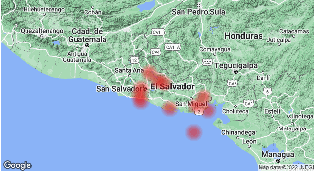

En El Salvador hay en parte grandes terremotos con fuerzas de más de 7,0, que causan daños en un radio de más de 100 kilómetros. Debido a la especial situación tectónica del país, hay más terremotos que el promedio.
Desde 1950, más de 3500 personas han muerto como consecuencia directa de los terremotos. 2 terremotos también causaron un tsunami posterior, que se cobró más vidas y daños.
Esta lista incluye los terremotos más fuertes registrados por el Servicio Geológico de Estados Unidos (USGS) en El Salvador o sus alrededores en los últimos 14 días. La inclusión de un suceso en esta lista depende en gran medida de su magnitud, pero también de su distancia a las zonas habitadas. Toda la información se refiere a la hora local. Esta página se actualiza diariamente a las 13 horas españolas.
| Fecha | Región |
|---|---|
| 8. jun, 15:37 | Magnitud 4.2: 14 km noroeste de Puerto Morazán, Nicaragua a una profundidad de 15.39 km. |
| 6. jun, 21:34 | Magnitud 4.2: km sur de La Libertad a una profundidad de 35 km. |
| 16. jun, 22:36 | Magnitud 4.4: 11 km este-sureste de Corinto, Nicaragua a una profundidad de 107.55 km. |
| 14. jun, 08:37 | Magnitud 4.5: 98 km sur-suroeste de Masachapa, Nicaragua a una profundidad de 10 km. |
| 13. jun, 11:45 | Magnitud 4.5: 53 km suroeste de Puerto El Triunfo a una profundidad de 35 km. |
| 13. jun, 11:45 | Magnitud 4.5: 53 km suroeste de Puerto El Triunfo a una profundidad de 35 km. |
| 12. jun, 15:16 | Magnitud 4.4: 21 km sur-sureste de Monjarás, Honduras a una profundidad de 10 km | 12. jun, 15:05 | Magnitud 4.3: 73 km sur-suroeste de Masachapa, Nicaragua a una profundidad de 35 km. | 11. jun, 19:57 | Magnitud 4.6: 92 km sur-suroeste de Masachapa, Nicaragua a una profundidad de 36.73 km. | 10. jun, 02:18 | Magnitud 4.9: 16 km sur-suroeste de Nueva Concepción, Guatemala a una profundidad de 81.52 km. |
El terremoto más fuerte en El Salvador ocurrió el 13.01.2001 en la región de Damage & Injuries In Every Dept. con una magnitud de 5,5 en la escala de Richter. El desplazamiento de las placas tectónicas a una profundidad de 32 km provocó 844 muertes. El terremoto también provocó un tsunami con más víctimas y destrucciones.
| Fecha | Región | Profundidad | Magnitude | siniestro |
|---|---|---|---|---|
| 30.05.2019 | San Salvador | 58 km | 6.6 | 1 |
| 06.05.2018 | La Union, San Miguel | 10 km | 5.4 | 0 |
| 10.04.2017 | San Salvador, soyapango | 3 km | 4.8 | 1 |
| 09.08.2015 | Alegria | 38 km | 4.5 | 0 |
| 14.10.2014 | Gulf Of Fonseca | 46 km | 7.3 | 1 |
| 24.11.2011 | El Salvador-Guatemala | 15 km | 5.1 | 0 |
| 08.05.2001 | Conchagua | 16 km | 5.7 | 1 |
| 13.02.2001 | San Juan Tepezontes-San Vicente-Cojutep | 5 km | 6.6 | 315 |
| 13.01.2001 | Damage & Injuries In Every Dept. | 32 km | 7.7 | 844 |
| 10.10.1986 | San Salvador | 24 km | 5.4 | 1100 |
| 19.06.1982 | San Salvador; Guatemala | 58 km | 6.2 | 43 |
| 03.05.1965 | San Marcos | 35 km | 6.0 | 125 |
| 06.05.1951 | Jucuapa | 6.5 | 100 |